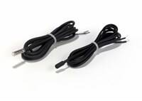

☎ 0216 344 48 19
Klimasun, 15 ürünle Syslab markasının endüstriyel iklimlendirme çözümlerini sunar. Otomasyon & Kontrol, Fan Motorları & Türbinler, Kompresörler, Nemlendirme Cihazları (Humidifier) kategorilerinde orijinal tedarik ve Avrupa'dan sipariş imkanı.


Evet. Klimasun Syslab ürünlerini ve yedek parçalarını orijinal olarak tedarik eder; kataloğumuzda 15 Syslab ürünü listelidir.
Evet, tüm ürünler orijinaldir. Stokta olmayanlar Almanya ve İtalya'dan sipariş üzerine temin edilir.
Ürünü teklif sepetine ekleyip WhatsApp (0532 424 6219) veya e-posta ile iletin; hızlıca kurumsal teklif alırsınız.